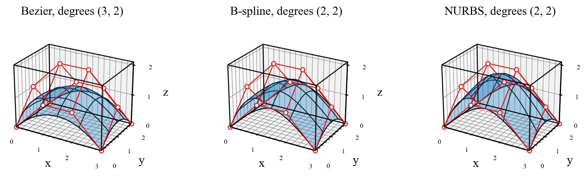

Bézier, B-spline, and NURBS surfaces#
Control nets and paired parameters#
A surface uses two independent parameters. Its control-point array has
shape (d, n+1, m+1): coordinate, \(u\) index, then \(v\) index. Its weights
have shape (n+1, m+1).
After this comparison of constructor inputs, the surface walkthroughs progress from a bilinear patch to a ruled surface, a full cylinder by extrusion, a torus by revolution, and a Coons patch.
Geometry |
Constructor arguments |
|---|---|
Polynomial Bézier |
|
Rational Bézier |
|
Polynomial B-spline |
|
NURBS |
The B-spline arguments plus |
A Bézier net with shape (3, 4, 3) has degrees \((3,2)\).
Supplying degrees \((2,2)\) instead gives a B-spline with an interior
\(u\) knot. If both knot vectors are omitted, the constructor generates
normalized clamped vectors. For explicit knots, supply both vectors and
both degrees, with len(U)=n+p+2 and len(V)=m+q+2.
get_value(u, v) evaluates paired parameter samples. It does not
form their Cartesian product. To sample a grid, use meshgrid, flatten
both grids, evaluate, and reshape the returned coordinates.
Complete comparison script#
Run python demos/documentation/surface_comparison.py, or
download the script.
"""Compare polynomial and rational surfaces on the same control net."""
import numpy as np
import matplotlib.pyplot as plt
import nurbspy as nrb
nrb.set_plot_options()
x, y = np.meshgrid(np.linspace(0., 3., 4), np.linspace(0., 2., 3),
indexing="ij")
z = np.array([[0., 1., 0.],
[1., 2., 1.],
[1., 2., 1.],
[0., 1., 0.]])
P = np.stack([x, y, z]) # Shape (3, 4, 3): coordinates, u index, v index.
W = np.ones((4, 3))
W[1:3, 1] = 3.
p, q = 2, 2
U = np.array([0., 0., 0., 0.5, 1., 1., 1.])
V = np.array([0., 0., 0., 1., 1., 1.])
surfaces = {
"Bezier": nrb.NurbsSurface(control_points=P),
"B-spline": nrb.NurbsSurface(control_points=P, u_degree=p, v_degree=q,
u_knots=U, v_knots=V),
"NURBS": nrb.NurbsSurface(control_points=P, weights=W, u_degree=p,
v_degree=q, u_knots=U, v_knots=V),
}
# get_value evaluates paired parameters; make and flatten the grid explicitly.
uu, vv = np.meshgrid(np.linspace(0., 1., 41), np.linspace(0., 1., 31),
indexing="ij")
fig = plt.figure(figsize=(12, 4.5))
fig.subplots_adjust(left=0.01, right=0.94, bottom=0.18, top=0.9, wspace=0.2)
for panel, (label, surface) in enumerate(surfaces.items(), start=1):
S = surface.get_value(uu.ravel(), vv.ravel())
midpoint = surface.get_value(0.5, 0.5)[:, 0]
print(f"{label}: degrees=({surface.p}, {surface.q}), S shape={S.shape}, "
f"S(0.5,0.5)={midpoint.round(6)}")
ax = fig.add_subplot(1, 3, panel, projection="3d")
surface.plot(fig=fig, ax=ax, surface_color=nrb.COLORS_MATLAB[0],
control_points=True, isocurves_u=5, isocurves_v=5)
ax.set(xlabel="x", ylabel="y", zlabel="z",
title=f"{label}, degrees ({surface.p}, {surface.q})",
xlim=(0, 3), ylim=(0, 2), zlim=(0, 2.1))
ax.set_box_aspect((3, 2, 2.1))
ax.set_xticks([0, 1, 2, 3])
ax.set_yticks([0, 1, 2])
ax.set_zticks([0, 1, 2])
ax.tick_params(labelsize=8)
for axis in (ax.xaxis, ax.yaxis, ax.zaxis):
axis.labelpad = 2
ax.view_init(elev=25, azim=-60)
plt.show()
Output and interpretation#
The 41 × 31 grid has 1,271 parameter pairs, so S.shape is
(3, 1271). If needed, S.reshape(3, 41, 31) recovers the grid layout.
Here surface.plot() performs its own sampling and draws the surface,
control net, boundaries, and isoparametric curves on each subplot.
Surface |
Degrees |
Position at \((u,v)=(0.5,0.5)\) |
|---|---|---|
Bézier |
\((3,2)\) |
\((1.5,\ 1.0,\ 1.25)\) |
B-spline |
\((2,2)\) |
\((1.5,\ 1.0,\ 1.5)\) |
NURBS |
\((2,2)\) |
\((1.5,\ 1.0,\ 1.75)\) |

The same net defines a Bézier patch, a B-spline surface, or a NURBS surface.#
The NURBS weights pull the surface toward the two elevated interior control points. All three surfaces interpolate the four corners because the knot vectors are clamped. Interior control points generally are not interpolation points.
Use surface.get_derivative(u, v, order_u=1, order_v=0) for
\(\mathbf S_u\) and switch the orders for \(\mathbf S_v\).
surface.get_normals(u, v) returns unit normals at regular points;
surface.get_curvature(u, v) returns (mean_curvature, gaussian_curvature).
The NURBS theory explains these quantities.